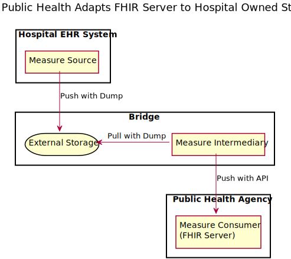
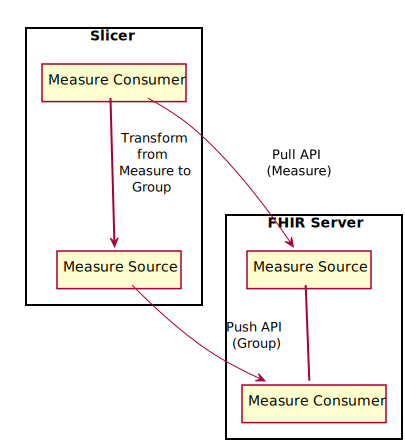

Situational Awareness for Novel Epidemic Response
0.1.0 - CI Build
Situational Awareness for Novel Epidemic Response
0.1.0 - CI Build
Situational Awareness for Novel Epidemic Response - Local Development build (v0.1.0). See the Directory of published versions
This section defines the actors and transactions in this implementation guide.
Figure 1.1-1 below shows the actors directly involved in the SANER Profile and the relevant transactions between them.

Figure 3-1: SANER Actor Diagram
Table 3-1 lists the transactions for each actor directly involved in the SANER Implementation Guide. To claim compliance with this guide, an actor shall support all required transactions (labeled “R”) and may support the optional transactions (labeled “O”).
| Actors | Transactions | Optionality |
|---|---|---|
| Measure Source | Query Measure [PULL-TX] | C 1 |
| Produce Measure [PUSH-TX] | C 2 | |
| Measure Consumer | Communicate Results [REPORT-TX] | R |
| Query Measure [PULL-TX] | C 3 | |
| Produce Measure [PUSH-TX] | C 4 | |
| Measure Intermediary |
Query Measure [PULL-TX] As Measure Source |
C 1 |
|
Produce Measure [PUSH-TX] As Measure Source |
C 2 | |
|
Communicate Results [REPORT-TX] As Measure Consumer |
R | |
|
Query Measure [PULL-TX] As Measure Consumer |
C 3 | |
|
Produce Measure [PUSH-TX] As Measure Consumer |
C 4 |
Notes:
This transaction is required when the Measure Source implements the Pull Option.
This transaction is required when the Measure Source implements the Push Option.
This transaction is required when the Measure Consumer implements the Pull Option.
This transaction is required when the Measure Consumer implements the Push Option.
The actors in this profile are described in more detail in the sections below.
The Measure Source Actor reports results for a single facility, collection of facilities or aggragated data for a region
TBD
The Measure Consumer provides access to aggregated or fine-grained data gathered from one or more Measure Sources.
The Measure Intermediary is a grouping of a Measure Source with a Measure Consumer.
This actor represents the composition of a Measure Source with a Measure Source.
A Measure Consumer that implements the Dump and Pull Options that is grouped with a Measure Source implementing the Push and API Options can be used as a bridge to adapt a Meaure Source implementing the Dump and Push options to communicate with a Measure Consumer implementing the API and Push options.

A Measure Consumer that implements the API Option and Push Option that is grouped with a Measure Source implementing the Pull and API Options is essentially the definition of a FHIR Server.

A Measure Consumer that implements the API and Pull Option can be grouped with a Measure Source implementing the Push, API and Fine-Grained option to “slice and dice” Measure Reports into Groups, populating a Measure Consumer with fine-grained data from a Measure Source. This adapter can be used to add the Fine Grained Option to a Measure Repository.

Options that may be selected for each actor in this guide, are listed in Table 3.2-1 below. Dependencies between options when applicable are specified in notes.
| Actor | Option Name |
| Measure Source | Storage Option |
| API Option | |
| Push Option | |
| Pull Option | |
| Bed Option | |
| Asset Option | |
| Group Option | |
| Measure Consumer | Storage Option |
| API Option | |
| Push Option | |
| Pull Option | |
| Bed Option | |
| Asset Option | |
| Group Option | |
| Measure Intermediary | No Options Defined |
The options in this guide are describe in more detail the sections below.
An actor implementing the Storage Option supports the ability to exchange FHIR Resources through various means of simple data transfer, rather than directly through a FHIR API call. This include mechanisms such as SFTP, S3 Blob Storage, Azure Blob Storage, a Message Queue, https: File Download, File System dumps, or Direct Messages with a data payload. Supported formats include JSON, XML and NDJSON.
This option applies to the actors as described below.
A Measure Source actor implementing the Storage Option uses external storage to communicate data.
A Measure Consumer actor implementing the Storage Option uses external storage to communicate data.
An actor implementing the API Option supports the ability to exchange FHIR Resources using FHIR RESTful APIs.
This option applies to the actors as described below.
An Measure Source actor implementing the API option uses FHIR RESTful APIs to communicate data.
An Measure Consumer actor implementing the API option uses FHIR RESTful APIs to communicate data.
An actor implementing the Push Option supports the periodic push of resources describing the current status of health delivery resources to a centralized collection point.
This option applies to the actors as described below.
A Measure Source implementing the Push Option periodically sends updates to a Measure Consumer using the Produce Measure transaction.
An Measure Consumer implementing the Push Option periodically recieves updates from the Measure Source using the Produce Measure transaction.
An actor implementing the Pull Option supports the periodic pull resources describing the current status of selected health delivery resources.
This option applies to the actors as described below.
A Measure Source implementing the Pull Option is periodically queried by an Measure Consumer using the Query Measure transaction to enable collection of the current status.
An Measure Consumer implementing the Pull Option periodically queries a Measure Source using the Query Measure transaction to enable collection of the current status.
An actor supporting the Bed Option can describe the status of beds.
This option applies to the actors as described below.
An Measure Source implementing the Bed Option generates data on beds.
An Measure Consumer implementing the Bed Option consumes data about beds.
An actor supporting the Asset Option can describe the status of non-bed treatment resources, such as ventilators, respirators, infusion pumps, monitoring equipment, et cetera
This option applies to the actors as described below.
An Measure Source implementing the Asset Option generates data on other Assets (e.g., ventilators, respirators, PPE, and other equipment or supplies).
An Measure Consumer implementing the Asset Option consumes data about other Assets (e.g., ventilators, respirators, PPE, and other equipment or supplies).
An actor supporting the Group Option can work with Group resources representing individual strata values extracted from a Measure Report
This option applies to the actors as described below.
An Measure Source implementing the Group Option can produce reports using the Group Resource.
An Measure Source implementing the Group Option can consume reports using the Group Resource.
The transactions in this profile are summarized in the sections below.
The Query Measure transaction allows a Measure Consumer to periodically query about the availability of a resource from an Measure Source.
For more details see the detailed transaction description
The Produce Measure transaction allows an Measure Source to periodically report on availability of resources to a Measure Consumer.
For more details see the detailed transaction description
The Communicate Results transaction allows users (e.g., Public Health Officials) to view current resource availability, or other systems to access resource availability data.
For more details see the detailed transaction description
IG © 2020+ HL7 International. Package hl7.fhir.us.saner#0.1.0 based on FHIR 4.0.1. Generated 2020-04-07
Links: Table of Contents |
QA Report
| Version History  |
|
 |
Propose a change
|
Propose a change